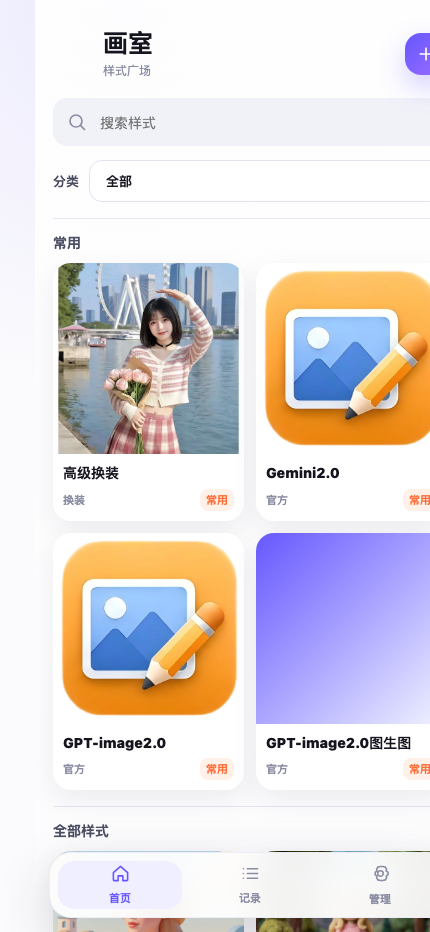
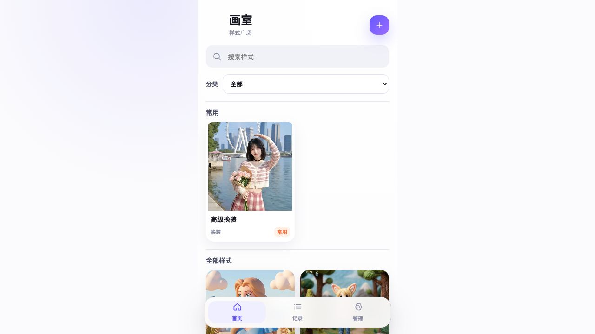
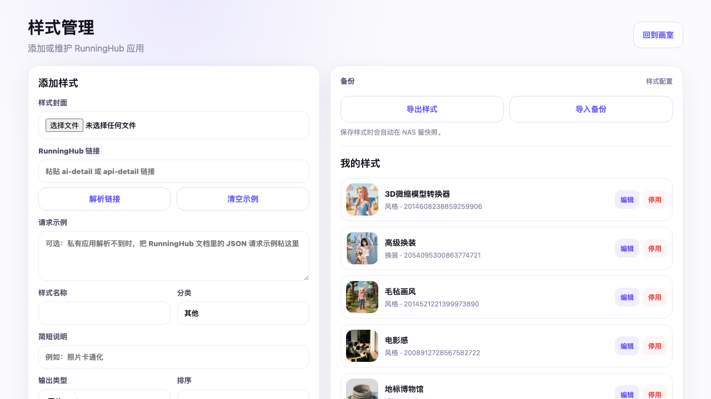

画室 Huashi
一个手机优先的私人 AI 图片工作台。它把多个 RunningHub 应用集中到 NAS 内网网页里：选择样式、填写参数、生成图片、下载或保存历史，后台可继续添加新的样式。

给接手者的第一句话
这是一个已经跑通的个人产品原型，不是静态 Demo。用户已经在内网 NAS 上使用了多天，当前包含 16 个 RunningHub 样式。下一步重点不是“能不能跑”，而是继续打磨移动端 UI、样式组织、输入控件体验和后台配置体验。
产品目标
统一入口
把多个 RunningHub 应用变成一个自己的样式广场，避免每次去官网找应用和文档。
手机好用
主要使用场景是手机打开 NAS 地址，选择图片或输入参数后直接生成。
持续扩展
后台可以继续添加 RunningHub 链接、配置封面、分类、输入项、输出类型和常用状态。
当前界面

首页：搜索、分类下拉、常用样式置顶、其他样式在下方。
后台：添加/编辑样式、解析 RunningHub 链接、导出/导入样式备份。功能清单
| 模块 | 已有能力 | 后续可打磨 |
|---|---|---|
| 首页 | 搜索、分类下拉、常用置顶、样式卡片、封面图。 | 更强的卡片层级、分类视觉、空状态、样式推荐。 |
| 生成页 | 按样式动态渲染图片、文件、文本、长文本、选择、数字输入。 | 滑块、开关、多图、参数模板、示例图预览。 |
| 结果页 | 显示生成中、失败、图片结果、ZIP 下载、ZIP 解压图片预览。 | 更明确的进度感、批量保存、相册视图、结果对比。 |
| 记录页 | 历史记录、状态筛选、重试、删除、保存。 | 按样式/日期筛选、收藏结果、搜索历史。 |
| 后台 | 添加样式、编辑样式、上传封面、停用样式、解析链接、导入导出备份。 | 更像设置台的分组布局、字段校验、拖拽排序、分类管理。 |
当前样式库
当前 NAS 导出的示例配置在 examples/huashi-apps.example.json，不含 RunningHub API key。应用分布如下：
- 设计：4 个
- 风格：3 个
- 官方：3 个
- 换装：2 个
- 人物：2 个
- 其他：2 个
样式包括 3D 微缩模型转换器、高级换装、毛毡画风、电影感、地标博物馆、工业拆解、微观城市、明星海报、图片去水印、万物重打光等。
技术结构
huashi/
server.py HTTP 服务与 API 路由
storage.py SQLite 数据模型与样式/任务持久化
service.py RunningHub 任务编排、下载、解压、备份
runninghub.py RunningHub API 客户端
runninghub_inspector.py RunningHub 链接和 JSON 示例解析
web/
index.html 手机端入口
admin.html 样式管理后台
app.js / admin.js 前端交互逻辑
styles.css 统一视觉样式
examples/
huashi-apps.example.json 样式配置备份示例
docs/
project-handoff.html 本交接文档关键 API
| 接口 | 用途 |
|---|---|
GET /api/apps |
前端样式列表，只返回启用样式。 |
POST /api/tasks |
提交生成任务，支持动态输入项和文件上传。 |
GET /api/tasks |
获取生成历史。 |
POST /api/admin/inspect-runninghub |
解析 RunningHub 链接或 JSON 请求示例。 |
POST /api/admin/apps |
新增样式。 |
PUT /api/admin/apps/{id} |
更新样式。 |
GET /api/admin/backup |
导出样式配置 JSON。 |
POST /api/admin/backup/import |
导入样式配置备份。 |
数据与安全边界
.env存 RunningHub API key，不进入 Git。data/存本地数据库、输入图、生成结果、封面、备份，不进入 Git。examples/huashi-apps.example.json可以公开，它只包含样式配置和 RunningHub 应用 ID。- 当前产品定位是家庭内网/个人 NAS 使用，尚未做公网账号体系。
启动与部署
# 本地启动
cp .env.example .env
python3 -m huashi.server --host 127.0.0.1 --port 8787 --data data
# Docker
docker compose up -d --build
# 检查
python3 -m unittest discover -s tests -v
python3 -m py_compile huashi/*.py
node --check web/app.js
node --check web/admin.js下一步 UI 建议方向
首页信息层级
现在已经可用，但样式越来越多后，需要更强的分类导航、常用区密度和卡片视觉节奏。
生成页专业感
不同 RunningHub 应用输入差异很大，建议把参数表单做得更像“控制台”，而不是普通表单。
结果与历史
可以围绕“作品库”设计，而不只是任务列表：结果收藏、批量预览、按样式回看会更像产品。